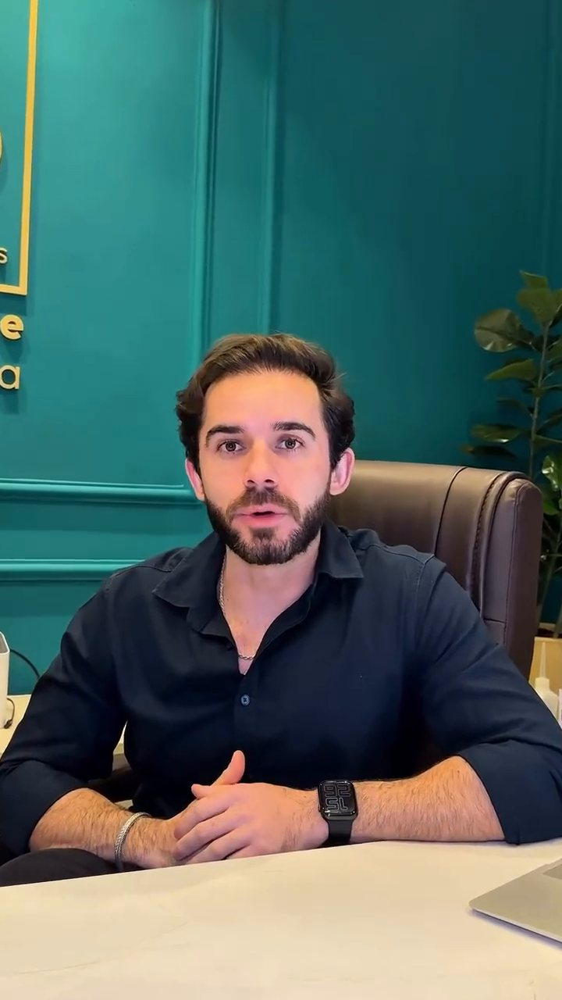

Seu objetivo é único. A estratégia também precisa ser.
Retângulos com moldura fina (como o selo do logo), botões retos (como nos posts), grade de linhas, numerais grandes em serifa, hero escuro.

Verde-floresta e ouro, sobre creme.
Medida nos posts e no logo (verde #163626, ouro #DAB676, creme #F6EEEA). O verde-petróleo da parede só aparece nas fotos.
Instrument Serif, Quicksand e a assinatura em Montserrat
Display Aa
Título H1 com itálico
Título H2 de seção
Título H3 de célula
ThiagoBenevidesQuicksand 500, linha 1.65, para textos corridos como os dos carrosséis do Instagram.
Instrument Serif tem serifa fechada, letras juntas e x-height alto, como os títulos dos posts. Quicksand é a sans arredondada do texto corrido. Montserrat só na assinatura do nome, como no logo (Thiago em negrito, Benevides em leve).
Células, linha do tempo e acordeão
Célula com hover
Fundo vira verde-floresta e o número desliza.
Grade de linhas
Células separadas por 1px, no lugar de cards com sombra.
Numerais em serifa
Referência aos números dos carrosséis.
- PASSO 01
Conversa
Rotina e histórico.
- PASSO 02
Avaliação
Composição corporal.
- PASSO 03
Estratégia
Plano individual.
- PASSO 04
Acompanhamento
Ajustes contínuos.